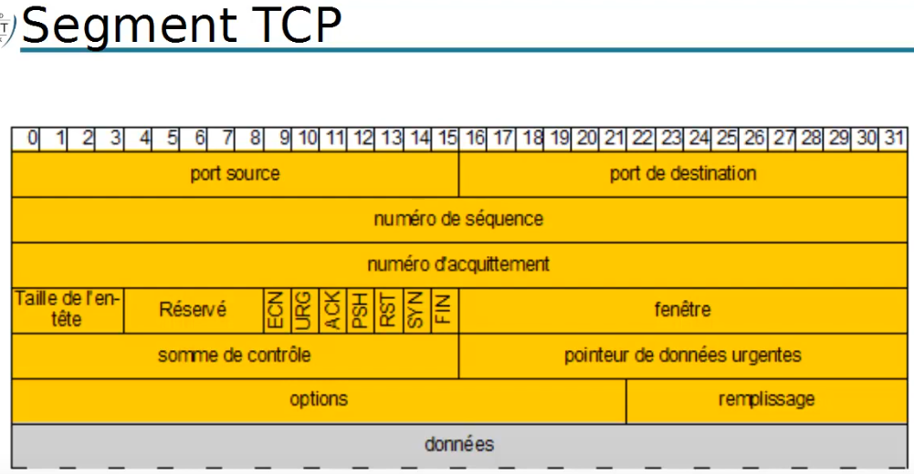
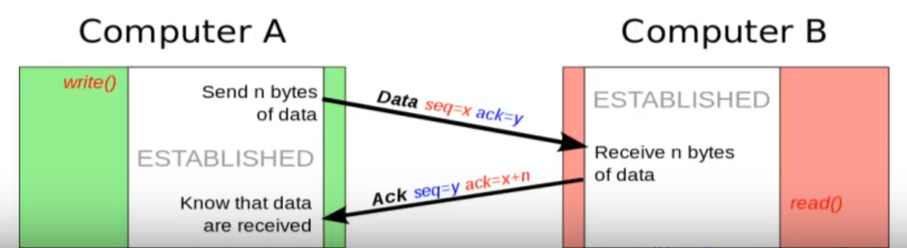
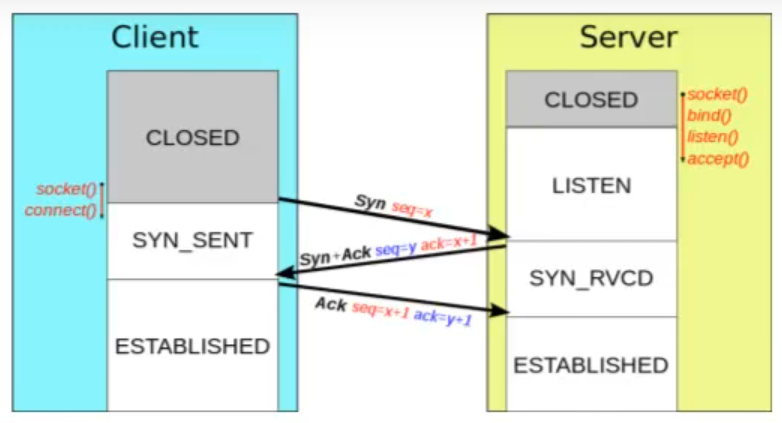

TCP
Plan
• Introduction
• Éléments
• Segment TCP
• Port TCP
• Fiabilité
• Établissement de connexion
• Autre drapeaux
• Autres éléments
Introduction
• Deux protocoles de couche transport dans le modèle TCP/IP
◇ TCP : pour le communicatins nécessitant une fiablitlité des données
▪ Protocole de contrôle de transmission
◇ UDP : pour les communications privilégiant le débit
• Premettent le dialogue entre applications
◇ OSI niveau 2 (Liaison) : communication sur réseau local
◇ OSI niveau 3 (Réseau) : communication entre réseaux
▪ entre machines distantes
◇ OSI niveau 4 (Transport) : communication entre applications distantes
Éléments
• contrôle des données
◇ mode connecté
▪ établissement d'une session de communication entre deux hôtes (applications)
▪ à ne pas confondre avec la couche session du modèle OSI (auth)
• régulation du débit
◇ par émission de messages (segments) de taille variable
• multiplexage
◇ cohabitation sur une même ligne d'inforamtions destinées à diverses applications
◇ en les identifant grâce à un numéro (de port)
Segment TCP

Port TCP
• stocké sur 2 octets
• défini l'application émettrice et l'application destinataire de l'information
• permettent le multiplexage
• 3 catgories :
• ports “bien connus” (Calle-known ports)
◇ de 0 à 1023
◇ assigné par l'IANA
▪ internet Assigned Numbers Authority
- exemple : FTP (21), SSH (22), HTTP (80)
- voir liste officielle
• ports enregistrés (Registered ports)
◇ de 1024 à 49151
◇ services
▪ enregistrés par L'IANA (officiels)
- expamples : OpenVPN (1194), IPSec (1293), Cisco X.25 over TCP (XOT) service (1998)
▪ ou non officiels
- exemple : Windows Live Messenger (1503)
• ports dynamiques / privés
◇ de 49152 à 65535
◇ plus rarement utilisés
Fiabilité
• numéro de séquence
◇ associé à un paquet lors de son émission
• après réception, un “accusé de réception” est envoyé
◇ paquet avec drapeaux ACL activé (à 1)
◇ avec un numéro d'acquittement égal au numéro de séquence du paquet reçu + quantité de données (en octets) reçues
◇ et un numéro de séquence égal au numéro d'acquittement du paquet reçu
• en l'absence de réception de cet “accusé de réception” durant un temps imparti, le paquet est retransmis
◇ en cas de réception de deux paquets identiques (même numéro de séquence), la machine réceptrice ne considérera que le dernier paquet reçu

Établissement de connexion
• “synchronisation” des numéros de séquence
• Three-way handshake
• Deux drapeaux :
◇ SYN : demande de connexion
◇ ACL :aquittement
▪ positionné ensuite pour tout les segements échangés sur une connexion établie
• 3 étapes :
◇ demande de connexion
◇ acquittement + demande de connexion
◇ acquittement

Autre drapeaux
• ECN : signame la présence de congestion
◇ RFC 3168
• URG : données urgentes
• PSH : données à envoyer tout de suite (push)
• RST : rupture anormale de la connexion (reset)
• FIN : demande la FIN de la connexion
• Un espace de 5 bits est conservé avant ces drapeaux
◇ afin de prévoir des éventuels ajouts futurs
Autres éléments
• Taille de l'en-tête
◇ essentiel, car la taille de champs Options est variable
• Fenêtre
◇ nombre d'octets que le récpeteur souhaite recevoir sans accusé de réception
• Somme de contrôle (Cjhecksum ou CRC)
◇ somme des champs de données de l'en-tête
◇ afin de permettre de vérifier l'intégrité de l'en-tête
◇ cf OSI : répétition avec l'Ethernet, car cloisonnement des couches
• Pointeur de données urgentes
◇ numéro de séquence à partir duquel l'informatio devient urgente
• Options
◇ diverses options
• Remplissage
◇ par des zéros
◇ afin d'obtenir une taille d'en-tête multiple de 32 bits
Ce qu'on a couvert
• Présentation du protocole TCP
◇ son rôle
◇ en-tête de segments
▪ drapeaux
◇ éléments permettant la fiabilité et le contrôle des données
▪ connexion